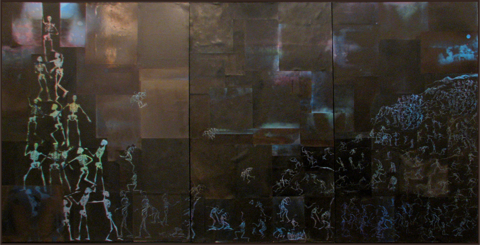

February 13, 2012
Sana the X-ray artist
© Sana Horani
How is it possible for someone to create art with X-rays? That’s probably the best reaction the artist Sana Horani has received on her work. “People tell me they’ve never even imagined that paintings could be created with X-rays,” she said to me in an interview. According to her, the importance of people understanding her art depends on the work, but she doesn’t care if people don’t like it. Her art fulfils her and gives her “a sense of satisfaction, the passion to do it again with something new, and a possibility to explore.”
Sana takes criticism well and believes that it exposes her to new areas in her work. “Being in the mode of producing, we [artists] tend to lose some points of our own work. Criticism opens up those voids,” she said. Politics and current affairs play a role in her work. Moreover, she believes that an artist has to be a good traveller. “They should see and learn from different milieus and cultures.”
She frequently depicts the colour gold in her art, and the recurring messages that she tries to express through her work deal with “our social life and its effect on nature.” When asked about the recurring themes in her work, she responded with: “Intervention in broken spaces to enlarge it and enter different places.”
She remarked that art gives new value to the society by constantly changing its norms. She produces art to react, express, communicate and transform herself. When asked what attracts her about being an artist, she said, “Freedom of expression and a sense of responsibility towards the social world.” Looking at other artists’ work broadens Sana’s vision, and her and others’ art always helps her learn something about herself. If she could receive training from deceased artists, she would choose Salvador Dalí and Vincent van Gogh.
She agreed that everyone who can appreciate art has a different way of looking at it or exhibits a different level of appreciation, and some contemporary artists take advantage of that and produce mediocre work. She also concurred that some artists produce controversial art only because controversy sells, whereas most artists use their art just to make money. Talking about today’s art enthusiasts, she said they’re more aware, but some are less skilled.
She believes that the government should fund art schools without any regulations. According to her, anyone can become an artist “if they are sensitive to their surroundings and can react to them in a manner that can be communicated.” However, she said while art skills can be taught, art sense can’t.
Sana doesn’t find art to be as popular a profession in Pakistan as it was in the past, and remarked that being an artist in today’s world is difficult. Expounding her views on the perfect artwork, she said there’s no such thing. “Perfection is a full stop. Even nature keeps changing.”
First published in Pakistan Today